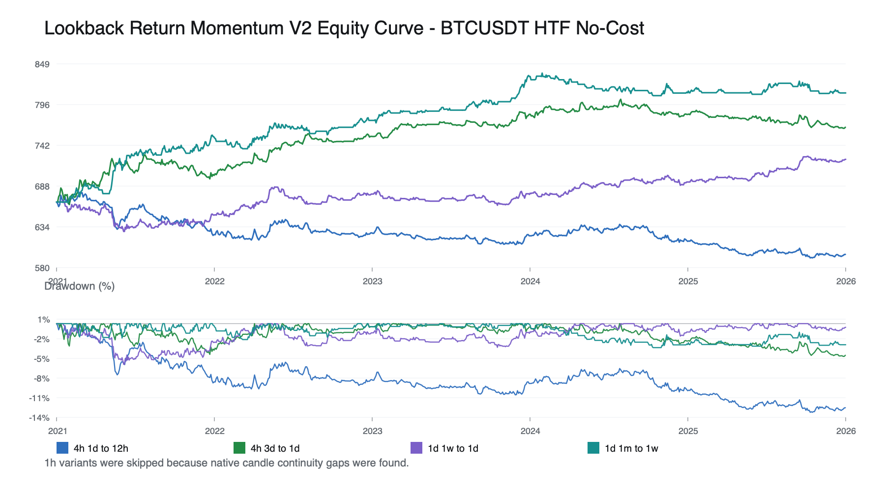
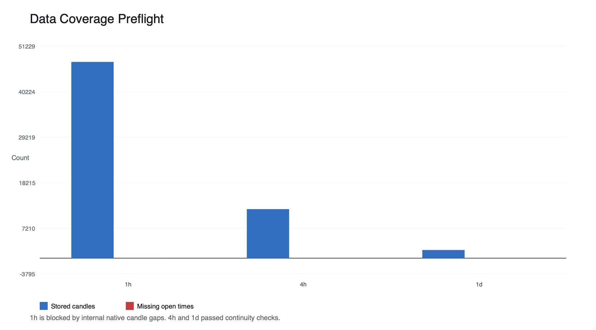
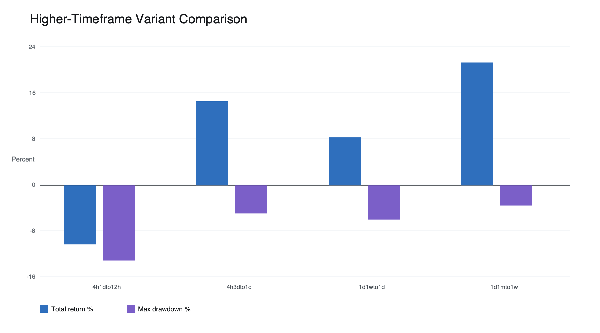
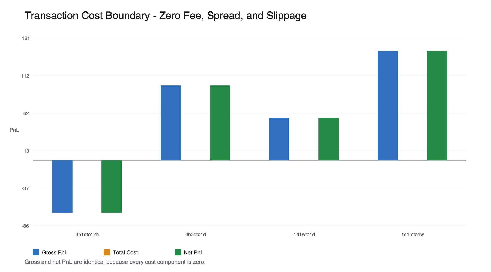
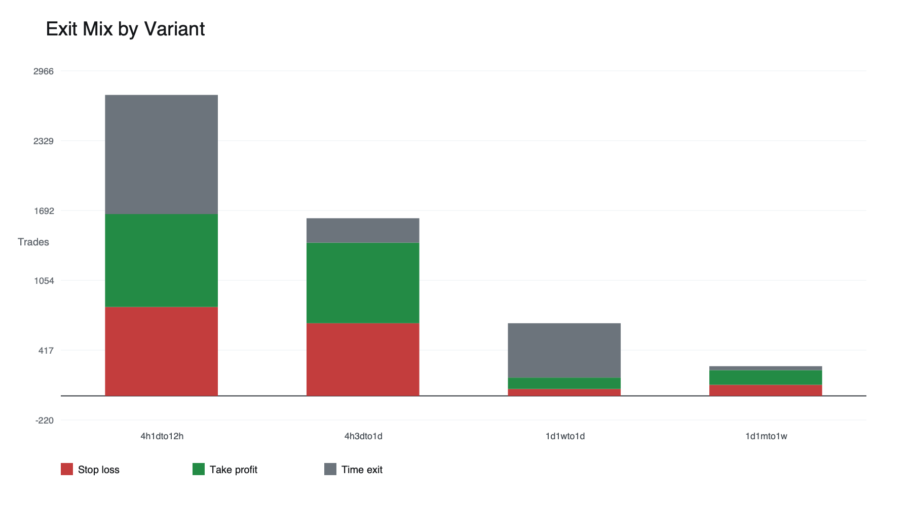
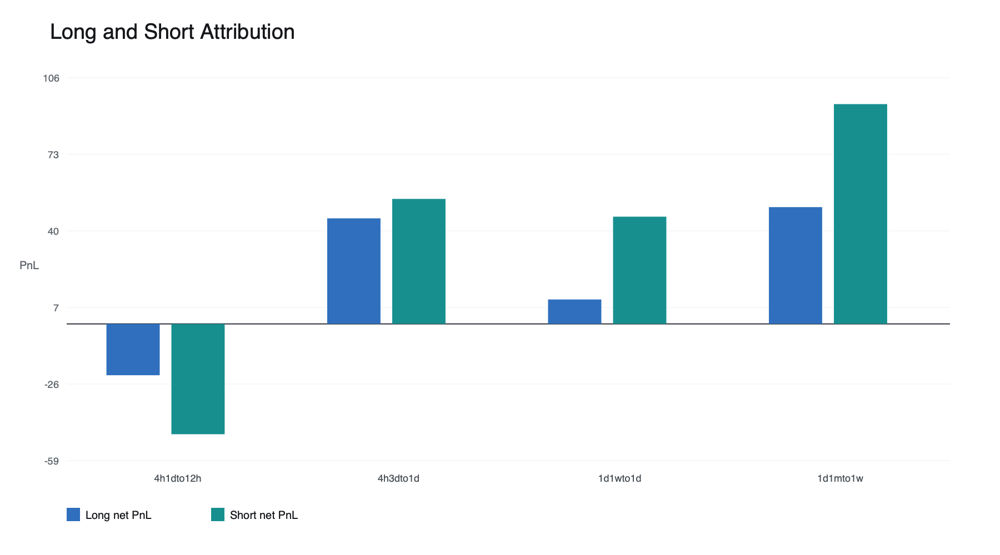
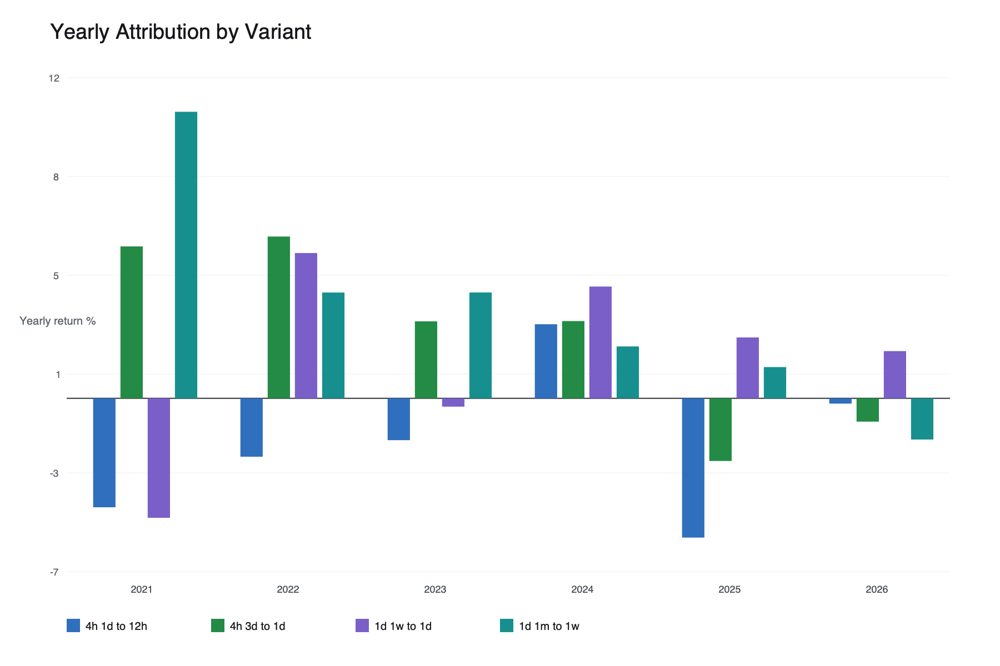
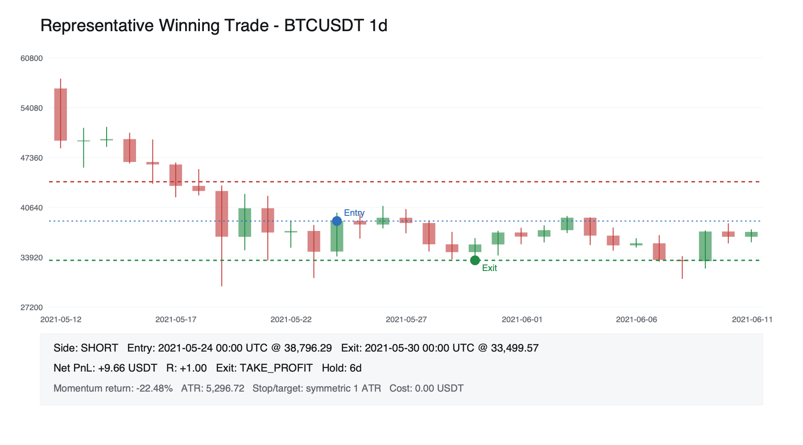
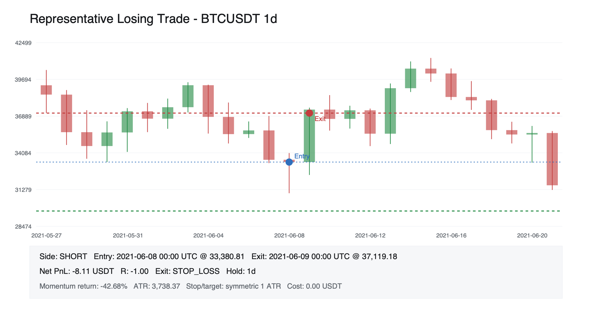

1. 핵심 요약
Lookback Return Momentum은 최근 완료봉들의 종가 수익률이 충분히 크면 이후 구간도 같은 방향으로 이어지는지 확인하는 전략입니다. V2는 이 아이디어를 분 단위가 아니라 1h, 4h, 1d 시간축으로 옮기고, 거래비용을 모두 0으로 둔 상태에서 1 ATR 손절과 1 ATR 익절을 적용했습니다.
실행 가능한 4h와 1d 네 조합 중 세 조합은 비용 0 조건에서 양수였습니다. 가장 좋은 조합은 1d에서 최근 1개월 수익률을 보고 다음 1주를 보유한 경우였고, 총수익률은 +21.64%, 최대 낙폭은 -3.57%였습니다. 1h는 native candle 내부 gap 때문에 실행에서 제외됐으며, 전략 실패 결과로 분류하지 않습니다.

| 항목 | 내용 |
|---|---|
| 시장/심볼 | Binance BTCUSDT |
| 기간 | 2021-01-01 00:00 UTC ~ 2026-06-01 00:00 UTC 직전 |
| 비교 대상 | 1h, 4h, 1d higher-timeframe lookback-return 조합 |
| 비용 조건 | 수수료, 스프레드, 슬리피지 0. gross/no-cost 확인 |
| 청산 조건 | 진입 시점 ATR 기준 1 ATR 손절, 1 ATR 익절, 시간 청산 |
| 데이터 제한 | 1h는 7개 gap, 총 14개 누락 open time 때문에 실행 제외 |
2. 전략에 포함된 가정과 이론적 배경
이 전략은 최근 수익률이 참여자 반응 지연, 자금 흐름, 느린 포지션 조정, 추세 추종 참여를 일부 압축한다는 전제를 둡니다. 가격이 모든 정보를 한 번에 반영하지 않거나 큰 참여자가 여러 시간 또는 여러 날에 걸쳐 포지션을 조정하면, 최근 움직임 뒤에 같은 방향의 후속 흐름이 남을 수 있습니다.
V2가 higher timeframe을 쓰는 이유도 여기에 있습니다. 1분이나 5분 봉은 스프레드 통과, 청산 연쇄, 짧은 되돌림, 국지적 주문 흐름이 많이 섞입니다. 반면 4h와 1d는 session 단위 조정, 일 단위 자금 흐름, macro risk appetite 변화, 느린 allocation 변화를 더 직접적으로 반영할 수 있습니다.
- 1h는 intraday 정보 전파를 확인하려는 시간축이지만, 이번 저장 데이터에서는 연속성 제한으로 실행하지 않았습니다.
- 4h는 session 단위의 방향 지속과 cross-session 포지션 조정을 확인하기 위한 시간축입니다.
- 1d는 일 단위 정보 반영, 자금 흐름, 더 느린 allocation 변화를 확인하기 위한 시간축입니다.
- Jegadeesh and Titman(1993)은 가격 모멘텀과 과소반응 배경을 제공하고, Moskowitz, Ooi, and Pedersen(2012)은 own-asset past return이 방향 정보를 가질 수 있다는 넓은 배경을 제공합니다. 이 문헌들은 현재 BTCUSDT 구현의 성과를 보장하지 않고, 이번 테스트는 그 메커니즘과의 정합성만 제한적으로 확인합니다.
r_t(L) = close[t] / close[t - L] - 1
if r_t(L) >= threshold:
enter long
elif r_t(L) <= -threshold:
enter short
else:
stay flat최근 움직임이 정보 반영이 아니라 과열, 청산 연쇄, 되돌림의 시작이면 같은 규칙은 실패합니다. 그래서 결과는 총수익률 하나가 아니라 청산 구성, 방향별 기여, 연도별 기여, 대표 거래의 규칙 작동 여부까지 함께 해석해야 합니다.
3. 백테스트 설정
신호와 ATR은 신호 candle까지의 완료봉만 사용합니다. 진입은 신호 candle close에서 처리하고, 손절·익절·시간 청산 확인은 다음 완료봉부터 시작합니다. 같은 candle에서 손절과 익절이 모두 닿으면 손절을 먼저 적용합니다.
# explanatory pseudocode
lookback_return = close[t] / close[t - lookback_bars] - 1
risk_distance = ATR_14_RMA[t]
long_stop = entry_price - risk_distance
long_target = entry_price + risk_distance
short_stop = entry_price + risk_distance
short_target = entry_price - risk_distance
# exit priority from next completed candle
stop_loss -> take_profit -> time_exit| 항목 | 설정 |
|---|---|
| 초기 자본 | 1,000,000 KRW, 1,500 KRW/USDT 환산 후 666.67 USDT |
| 포지션 사이징 | cash_fraction 0.10 |
| ATR | 14 period RMA |
| 손절/익절 | 각각 1 ATR |
| 비용 | fee 0, spread 0, slippage 0 |
| 동일 candle 처리 | 손절 우선 |

데이터 표는 이번 결론의 범위를 정합니다. 1h가 빠졌기 때문에 V2 결과는 4h와 1d 실행 조합에 대한 판단이며, 1h momentum 자체의 성패 판단은 아닙니다.
| 타임프레임 | 상태 | 저장 candle | missing | 시작 | 마지막 |
|---|---|---|---|---|---|
| 1h | 제외 | 47,434 | 14 | 2021-01-01 | 2026-05-31 |
| 4h | 실행 | 11,862 | 0 | 2021-01-01 | 2026-05-31 |
| 1d | 실행 | 1,977 | 0 | 2021-01-01 | 2026-05-31 |
4. 결과
result comparison은 평균값 하나로 덮기 어렵습니다. 4h의 짧은 1일 lookback 조합은 -10.40%였지만, 4h의 3일 lookback 조합과 1d 두 조합은 양수였습니다. 이 차이는 정보 반영 지연이 더 긴 관찰 구간에서 더 잘 드러날 수 있다는 쪽을 지지하지만, higher timeframe 자체가 항상 우월하다는 뜻은 아닙니다.

| 비교 대상 | TF | lookback | hold | threshold | 거래 | 수익률 | MDD | 순손익 | 평균 R | 승률 | PF |
|---|---|---|---|---|---|---|---|---|---|---|---|
| 4h 1d to 12h | 4h | 6 | 3 | 0.010 | 2,746 | -10.40% | -13.25% | -69.33 | -0.012 | +48.03% | 0.942 |
| 4h 3d to 1d | 4h | 18 | 6 | 0.030 | 1,621 | +14.82% | -4.96% | 98.83 | 0.039 | +51.94% | 1.094 |
| 1d 1w to 1d | 1d | 7 | 1 | 0.030 | 663 | +8.47% | -6.04% | 56.45 | 0.042 | +50.38% | 1.125 |
| 1d 1m to 1w | 1d | 30 | 7 | 0.100 | 271 | +21.64% | -3.57% | 144.29 | 0.112 | +54.98% | 1.380 |
cost impact는 이번 결과를 해석할 때 가장 먼저 제한해야 하는 부분입니다. 수수료, 스프레드, 슬리피지가 모두 0이라 gross PnL과 net PnL이 동일합니다. 따라서 이 표와 이미지는 수익성을 입증하는 자료가 아니라, 비용을 다시 넣기 전 raw 방향성과 exit geometry를 분리한 자료입니다.

exit mix는 V2의 성패가 단순한 방향 적중만으로 정해지지 않았음을 설명합니다. 최고 조합은 take-profit 134회, stop-loss 101회로 target 기여가 더 컸습니다. 반대로 4h 1일 lookback 조합은 time exit가 1,087회로 많고 전체 기대값이 음수였습니다.

| 비교 대상 | 손절 | 익절 | 시간 청산 |
|---|---|---|---|
| 4h 1d to 12h | 811 | 848 | 1,087 |
| 4h 3d to 1d | 663 | 735 | 223 |
| 1d 1w to 1d | 63 | 104 | 496 |
| 1d 1m to 1w | 101 | 134 | 36 |
side attribution은 결과가 완전히 대칭적이지 않다는 점을 드러냅니다. 양수 조합은 Long과 Short가 모두 기여했지만, 최고 조합에서는 Short 순손익 94.23 USDT가 Long 순손익 50.05 USDT보다 컸습니다. 따라서 V2의 좋은 결과는 양방향 모멘텀 전체가 균등하게 작동했다기보다, 특정 방향과 구간의 기여를 함께 포함합니다.

| 비교 대상 | Long 거래 | Long 순손익 | Short 거래 | Short 순손익 |
|---|---|---|---|---|
| 4h 1d to 12h | 1,390 | -22.01 | 1,356 | -47.32 |
| 4h 3d to 1d | 850 | 45.24 | 771 | 53.58 |
| 1d 1w to 1d | 352 | 10.47 | 311 | 45.97 |
| 1d 1m to 1w | 156 | 50.05 | 115 | 94.23 |
yearly attribution은 결과가 어느 regime에 기대는지 확인합니다. 최고 조합은 2021~2025에 모두 양수였지만 2026에는 -1.55%였습니다. 4h 3일 lookback도 2021~2024는 양수였고 2025~2026은 음수였습니다. 이 패턴은 V2가 느린 시간축과 맞을 가능성을 높이지만, 최근 구간 약화와 regime 의존성을 동시에 남깁니다.

| 연도 | 4h 1d to 12h | 4h 3d to 1d | 1d 1w to 1d | 1d 1m to 1w |
|---|---|---|---|---|
| 2021 | -4.10% | +5.72% | -4.50% | +10.79% |
| 2022 | -2.20% | +6.09% | +5.47% | +3.98% |
| 2023 | -1.58% | +2.90% | -0.31% | +3.99% |
| 2024 | +2.79% | +2.91% | +4.21% | +1.95% |
| 2025 | -5.24% | -2.36% | +2.29% | +1.18% |
| 2026 | -0.20% | -0.88% | +1.78% | -1.55% |
5. 대표 거래
대표 거래는 최고 성과 조합에서 골랐습니다. 두 사례 모두 Short 신호이며, 최근 1개월 수익률이 큰 음수였기 때문에 하락 방향 continuation을 기대한 진입입니다. 수익 거래는 target까지 이어진 경우이고, 손실 거래는 같은 신호가 반등에 막혀 stop으로 끝난 경우입니다.

| 항목 | 대표 수익 거래 |
|---|---|
| 방향 | SHORT |
| 진입 | 2021-05-24 00:00 UTC / 38,796.29 |
| 청산 | 2021-05-30 00:00 UTC / 33,499.57 |
| 신호 수익률 | -22.48% |
| ATR | 5,296.72 / 1,365.26 bps |
| 손익 | +9.66 USDT / R +1.00 |
| 청산 사유 | TAKE_PROFIT |

| 항목 | 대표 손실 거래 |
|---|---|
| 방향 | SHORT |
| 진입 | 2021-06-08 00:00 UTC / 33,380.81 |
| 청산 | 2021-06-09 00:00 UTC / 37,119.18 |
| 신호 수익률 | -42.68% |
| ATR | 3,738.37 / 1,119.92 bps |
| 손익 | -8.11 USDT / R -1.00 |
| 청산 사유 | STOP_LOSS |
두 대표 거래는 같은 규칙이 target과 stop으로 갈라지는 모습을 보여줍니다. 전체 최고 조합에서도 take-profit 134회와 stop-loss 101회가 함께 존재하므로, 수익 사례 하나가 전략을 증명하지 않습니다. 다만 aggregate에서 target이 stop보다 많고 profit factor가 1.380이었기 때문에, 이 대표 수익 거래는 전체 결과와 방향이 맞는 예시입니다.
6. 해석
이번 V2 결과는 테스트된 higher-timeframe no-cost 구현이 4h와 1d에서 raw edge 후보를 가질 수 있음을 확인했습니다. 실행 가능한 네 조합 중 세 조합이 비용 0 조건에서 양수였고, 최고 조합은 +21.64% 수익률, -3.57% 최대 낙폭, 1.380 profit factor를 기록했습니다.
이 결과가 의미 있는 이유는 시간축입니다. 이전 분 단위 테스트는 microstructure noise, 짧은 되돌림, liquidation burst가 많이 섞였을 가능성이 컸습니다. 이번 4h/1d 결과는 정보 반영 지연, 느린 포지션 조정, 추세 추종 참여가 더 느린 시간축에서 포착될 수 있다는 설명과 더 잘 맞습니다.
동시에 결론은 제한적입니다. 1h는 데이터 연속성 제한으로 빠졌고, 비용 0 조건이라 gross와 net이 같습니다. 따라서 이 결과는 cost-aware profitability를 뜻하지 않습니다. 또한 4h 1일 lookback 조합은 음수였고, 최고 조합도 2026 구간은 음수였으며 Short 기여가 더 컸습니다. 모멘텀 전략군 전체가 작동한다고 판단할 근거로는 아직 부족합니다.
주요 근거를 다시 정리하면 다음과 같습니다.
- data coverage는 1h를 전략 실패가 아니라 데이터 제한으로 분리합니다. 현재 결론은 4h와 1d에 한정됩니다.
- result comparison은 세 조합이 양수였지만 한 조합이 음수였다는 mixed result를 보여줍니다. higher timeframe이라는 이름만으로 충분하지 않습니다.
- cost impact는 비용이 0이어서 gross/net이 같다는 사실을 고정합니다. 다음 검증에서는 비용이 성과를 얼마나 줄이는지 먼저 확인해야 합니다.
- exit mix는 최고 조합에서 target이 stop보다 많았다는 성공 driver와, 손실 조합에서 time exit가 많았다는 약점을 함께 설명합니다.
- side attribution은 Short 기여가 더 큰 조합을 드러냅니다. Long/Short 대칭성을 별도로 확인해야 합니다.
- yearly attribution은 2021~2024 성과와 2025~2026 약화를 함께 보여줍니다. regime 의존성을 무시하면 결과를 과장하게 됩니다.
- representative trades는 규칙이 의도대로 target과 stop으로 작동한 사례를 제공합니다. 다만 개별 사례는 aggregate 근거를 보조할 뿐입니다.
보완점은 다음과 같습니다.
- 비용 반영 검증이 필요합니다. 이번 결과는 fee, spread, slippage를 모두 0으로 둔 gross/no-cost 확인이므로, 양수 조합이 실제 비용을 견디는지는 아직 모릅니다.
- 1h 데이터 정책을 먼저 정해야 합니다. 누락 open time을 그대로 제한으로 둘지, 검증된 보정/집계 규칙을 따로 만들지 결정해야 1h까지 비교할 수 있습니다.
- 연도별·방향별 driver를 분리해야 합니다. 최고 조합은 전체로는 양수지만 2026은 음수였고 Short 기여가 더 컸습니다.
- OOS/WFO 검증이 필요합니다. 같은 기간의 positive 조합을 본 뒤 바로 채택하면 과적합 위험이 커지므로, 다음 판단은 재튜닝하지 않은 검증 구간에서 확인해야 합니다.